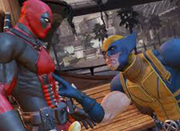
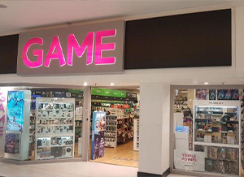

ULTIMAS NOTICIAS DE VIDEOJUEGOS

ir al sitio
Deadpool y wolverine como personajes de videojuegos
Desde 1991, estos personajes de Marvel han estado en juegos de Nintendo, PlayStation y Xbox. ir al sitio
actores de videojuegos se van a huelga; protestan contra el uso de ia
SAG-AFTRA sale en defensa de los trabajadores en medios interactivos. ir al sitio
estudio revela las preocupaciones actuales de los DEsarrolladores
Seguro que recordáis el informe que apuntaba a que el 8% de los desarrolladores
de la industria trabajaban en la sucesora Nintendo.ir al sitio
guia para los eventos de los videojuegos del verano 2024
Hace tiempo, antes de que se pudiera acceder a internet desde cualquier sitio, todos los otoños se entregaba en mano.
EVO 2024: REPORTE CON NUEVO CONTENIDO SOBRE LOS VIDEOJUEGOS DE PELEA
Emociónense gracias a una nueva ola de diversion de peleas con Tekken 8, Fatal Fury. ir al sitio

GOLPE AL FORMATO FISICO: GAME UK DEJARA DE VENDER SEMINUEVOS MUY PRONTO
Empleados de la tienda GAME de Reino Unido anuncian cambios.
netflix: todas sus series y peliculas basadas en videojuegos
Repasmos las principales producciones en Netflix en forma de series y peliculas, animadas y de acción real.
la proxima era del gaming ya esta aqui
El aumento de participación de los eSports, mejora de los gráficos de los juegos en la nube.
ir al sitio
insomniac GAMES SIGUE TRABAJANDO EN EL MODO NUEVO JUEGO
El modo nuevo juego plus llegará pronto a Marvel´s Spider-Man 2, con una serie de nuevas caracteristicas para el exclusivo PlayStation 5.ir al sitio